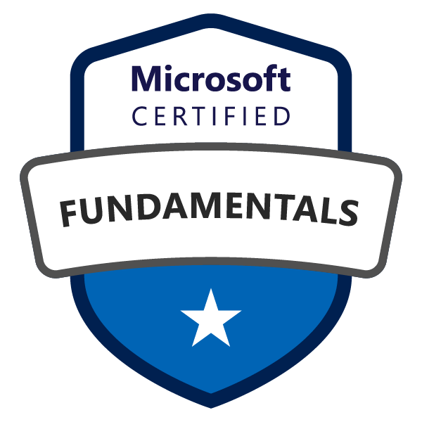

Microsoft Azure Fundamentals (AZ-900)
Completed May 2025 — Score: 905/1000

Microsoft Certified: Azure Fundamentals (AZ-900)
Certification Overview
This certification validates foundational knowledge of Microsoft Azure services, cloud computing models, pricing structures, governance tools, and identity management. It serves as a gateway into Azure's core architecture and platform capabilities.
Topics Covered
- Cloud concepts and deployment models
- Core Azure services: compute, storage, networking
- Pricing and support models
- Identity, access, and security basics
- Governance, compliance, and monitoring tools
Study Resources
- Completed Microsoft Learn AZ-900 Learning Path
- Took the official Microsoft practice assessment twice
- Watched AZ-900 Exam Cram video by Adam Marczak
- Completed practice exams from Marczak.IO
- Completed 3 full practice exams from AZ-900: Microsoft Azure Fundamentals Study Guide With Practice Questions & Labs: Sixth Edition - 2024
- Used ChatGPT to review and quiz each exam domain
Skills Demonstrated
- Practical understanding of core Azure services and their use cases
- Ability to explain IaaS, PaaS, SaaS, and deployment models
- Familiarity with Azure pricing, billing, and cost management tools
- Hands-on experience using governance features like Policy, RBAC, and Blueprints
- Comfort navigating the Azure Portal, deploying VMs, configuring storage, and setting budgets